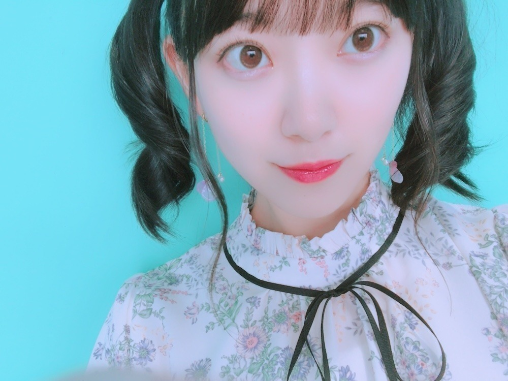

2018/0712Thu近づいてみた
にこ〜( ˆoˆ )


ちらっ^_^
ar発売日です！
アイメイクがかわいいです。
みてねー！

薄メイク。

セブンイレブンさんの台湾ver CMに出させていただいています！
ヒーロー風なCMに注目です！

ついでにロングの時の写真も 。
ロング派ショート派
ありがたい事に髪型についての意見を
日々たくさんいただきます
これからは1つにこだわらず
お仕事で切ったり伸ばしたり染めたり
色々変化もしていくと思います
でも、どんな私もいつも変わらずに
応援してくださる皆さんが大好きです
いつしか日奈子に
未央奈はカメレオンみたいに
いろんな色に染まれるって言われた時、
こんな無色のままでいいのかなって自信を
失いかけてたから少し嬉しかったのを思い出しました
もっと幅広く色んな経験をして
あらゆる色に染まりたいなぁって思います
どんな私も
私であることに変わりはない。
桜の木も花が咲いたと思ったら
緑の葉だけになったり、
冬には花も葉も無いから見た目は乏しく淋しく見えるかもしれないけど樹木自体はしっかりとぶれずにそこにあって...花が咲く春に備えていて。
見え方はその都度違えど桜の木は常に
存在して四季を通していろんな形で人々を魅了していますよね
すごいなぁ
私も芯のあるブレない人になりたいです
o(･x･)/
頑張ろう
前進 積み重ね あるのみ。だね。
そういえば、
とうもろこしと桃が大好きなんですけど
とうもろこしと桃が美味しいところってどこなんだろう？
山梨？新潟？うーん
知りたい...
では。
2018/07/12 12:42
コメント(592)
とうもろこしは北海道やで
ホワイトのやーつ
お仕事で切ったり伸ばしたり出来るのも
芸能界ならではだね
ショートの方が好きだけど未央ちゃんなら
なんにしてもカラー込みで似合うと思うよ！
ホワイトのやーつ
お仕事で切ったり伸ばしたり出来るのも
芸能界ならではだね
ショートの方が好きだけど未央ちゃんなら
なんにしてもカラー込みで似合うと思うよ！
いつもブログ更新ありがとう！
どんな形であれ、未央奈が思うようにやってる事にはいつも応援してるよ〜
たとえ失敗してもそれも経験と思えばプラスにもなるし、次への挑戦って意味でもあるしチャレンジして行くことが1番重要かもねー
とうもろこしはバーベキュー仕様で^_^
どんな形であれ、未央奈が思うようにやってる事にはいつも応援してるよ〜
たとえ失敗してもそれも経験と思えばプラスにもなるし、次への挑戦って意味でもあるしチャレンジして行くことが1番重要かもねー
とうもろこしはバーベキュー仕様で^_^
桃なら岡山だよ〜(((o(*ﾟ▽ﾟ*)o)))
未央奈さん岡山おいで〜！！
未央奈さんみたいにロングもショートも似合う人とかレアだから羨ましいよ〜！！
未央奈さん岡山おいで〜！！
未央奈さんみたいにロングもショートも似合う人とかレアだから羨ましいよ〜！！
すげー好き
未央ちゃん
ブログ更新ありがとう
写真いつも嬉しいよ
とうもろこしは
北海道が美味しいかな？
とうきびっていうのか
わかんないけど
桃は岡山県かな？
ただの桃太郎のイメージなのか(笑)
山梨は梨
的な(笑)
果物たくさん食べたいね
ブログ更新ありがとう
写真いつも嬉しいよ
とうもろこしは
北海道が美味しいかな？
とうきびっていうのか
わかんないけど
桃は岡山県かな？
ただの桃太郎のイメージなのか(笑)
山梨は梨
的な(笑)
果物たくさん食べたいね
未央奈ー更新ありがとう。
今日の写真も又一段と可愛いのばかりで目移りしそうですな～～ ほんと可愛過ぎてやばい全部肩まで髪があって黒髪で俺得過ぎる～～～早めに保存せねばショートの未央奈も可愛いけどロング好きとしてはやっぱりこのぐらいの髪が一番可愛いごめんねちょっとあまりの可愛さにやられてしまってついつい語り過ぎてしまった
ほんと可愛過ぎてやばい全部肩まで髪があって黒髪で俺得過ぎる～～～早めに保存せねばショートの未央奈も可愛いけどロング好きとしてはやっぱりこのぐらいの髪が一番可愛いごめんねちょっとあまりの可愛さにやられてしまってついつい語り過ぎてしまった
未央奈きっと色んな色に変われる未央奈だからでこそここまで愛されているんだよ！無色、何色にも染まっていない未央奈だからやれることもたくさんあると思うよ。未央奈～～一つの事に対して一つの方向から見てはだめだよ色んな方向から見なきゃ堀未央奈という人間は未央奈の考え方一つでなんにでもなると僕は思うよ！なんにでも挑戦していったりTVでは色んな表情を見せてくれるそんな未央奈が僕は好きだよ。
これからも色んな未央奈を見せてね！
季節はその時々顔を変え四季折々に色んな姿を見せてくれますねたまには自然を楽しむとしますかな！
桃いいね！久しぶりに食べたくなってきた～～
最後に昨日のレコメンのセリフ言うの最高だったよ可愛かったそれだけ
ではねーー
今日の写真も又一段と可愛いのばかりで目移りしそうですな～～
未央奈きっと色んな色に変われる未央奈だからでこそここまで愛されているんだよ！無色、何色にも染まっていない未央奈だからやれることもたくさんあると思うよ。未央奈～～一つの事に対して一つの方向から見てはだめだよ色んな方向から見なきゃ堀未央奈という人間は未央奈の考え方一つでなんにでもなると僕は思うよ！なんにでも挑戦していったりTVでは色んな表情を見せてくれるそんな未央奈が僕は好きだよ。
これからも色んな未央奈を見せてね！
季節はその時々顔を変え四季折々に色んな姿を見せてくれますねたまには自然を楽しむとしますかな！
桃いいね！久しぶりに食べたくなってきた～～
最後に昨日のレコメンのセリフ言うの最高だったよ可愛かったそれだけ
ではねーー
山梨出身だから山梨って言っとく笑
みおなー！
ブログ更新ありがとう
髪切る前のツインも可愛かったけど今のボブも最高に可愛い！
結論未央奈は可愛い笑笑
確かに無色って何色にも染まれるから魅力的だね、きいちゃん凄い
とうもろころしと桃良いですね
そーいえば今日とうもろこし茶発見しました！
飲んでないから美味しいかわからないけど飲んでみてね笑笑
次のブログも楽しみにしてます！
ばいばーい
ブログ更新ありがとう
髪切る前のツインも可愛かったけど今のボブも最高に可愛い！
結論未央奈は可愛い笑笑
確かに無色って何色にも染まれるから魅力的だね、きいちゃん凄い
とうもろころしと桃良いですね
そーいえば今日とうもろこし茶発見しました！
飲んでないから美味しいかわからないけど飲んでみてね笑笑
次のブログも楽しみにしてます！
ばいばーい
山形の桃も美味しいよ〜
1枚目と2枚目好きすぎる〜超かわいい
日奈子いいこと言うね！共感できるわ
これからも頑張れ未央奈！
日奈子いいこと言うね！共感できるわ
これからも頑張れ未央奈！
かわいい➰
桃ととうもろこしの美味しい県は長野県、山梨県です
桃ととうもろこしの美味しい県は長野県、山梨県です
ブログありがとう！
新潟はなんでも美味
米、魚、肉、トウモロコシ、果物、野菜、お酒、
未央奈も新潟来てねーー！！
米、魚、肉、トウモロコシ、果物、野菜、お酒、
未央奈も新潟来てねーー！！
流行りの髪型やメイクに興味を持ったり挑戦するることは女性にとって当然の感覚だし仕事の要望なら尚更
でも自分はショート派かな笑
写真集「君らしさ」
ショートヘアの未央奈に合った秀逸なタイトルと内容でいい作品です
後、映画「悲しみの忘れ方」の信号を渡るシーンが印象的で今でも凄く好きです
無色のまま、ありのままの未央奈も充分魅力的ですよ
でも自分はショート派かな笑
写真集「君らしさ」
ショートヘアの未央奈に合った秀逸なタイトルと内容でいい作品です
後、映画「悲しみの忘れ方」の信号を渡るシーンが印象的で今でも凄く好きです
無色のまま、ありのままの未央奈も充分魅力的ですよ
わたしが食べたとうもろこし中での1番は青森県の岩木山の近くで採れる、『嶽きみ』！果物みたいに甘いよ〜！
いつ見ても陰りのない可愛さに感謝
どんな髪型もにあってるよー
とうもろこしは鳥取？
桃は長野？
きーちゃんによろー
んじゃねー
どんな髪型もにあってるよー
とうもろこしは鳥取？
桃は長野？
きーちゃんによろー
んじゃねー
堀ちゃん ライブお疲れさまー!
3日目の一番先端のステージの下あたりで見ていました。
堀ちゃんが来てくれて超うれしかったです。
推しタオルを掲げている人に向かって、何回も丁寧に両手を回していたのは、名前がひっくり返っているのを教えてあげていたのなと推理しますが、当たりでしょうか
これから暑いので体調に気をつけて、全国ツアーがんばってください。
とうもろこし、桃は福島
3日目の一番先端のステージの下あたりで見ていました。
堀ちゃんが来てくれて超うれしかったです。
推しタオルを掲げている人に向かって、何回も丁寧に両手を回していたのは、名前がひっくり返っているのを教えてあげていたのなと推理しますが、当たりでしょうか
これから暑いので体調に気をつけて、全国ツアーがんばってください。
とうもろこし、桃は福島
山梨桃おいしいからぜひ来てください！！！！！！！！
ぜひ暁色に！
かわいい(ﾉ≧▽≦)ﾉ
福岡県うきは市ってところが、野菜も果物も最高に美味しいよーw
都心部と離れてるからなかなか行く機会は無いかもだけど、いつか来てみてねー！
都心部と離れてるからなかなか行く機会は無いかもだけど、いつか来てみてねー！
もちのろんで、堀ちゃんのなかみも大好きなんやで ✨
桃は山梨が美味しかった
桃尻のワイが言うんやから間違いないで(´・ω・`)
桃は山梨が美味しかった
桃尻のワイが言うんやから間違いないで(´・ω・`)
山梨 ！！
是非食べに来て！
是非食べに来て！
未央奈ブログ更新ありがとー！笑
可愛いすぎ！❤
未央奈大好き！
可愛いすぎ！❤
未央奈大好き！
未央奈ブログ更新ありがとう！
未央奈の笑い方めっちゃ好きなんやけど、、、
きいちゃんの言うとおり未央奈はほんとにカメレオンみたいだね！！
私は未央奈のことを心から尊敬しています。
これからも体調に気を付けて頑張ってね！
大好きだよ！！！
未央奈の笑い方めっちゃ好きなんやけど、、、
きいちゃんの言うとおり未央奈はほんとにカメレオンみたいだね！！
私は未央奈のことを心から尊敬しています。
これからも体調に気を付けて頑張ってね！
大好きだよ！！！
トウモロコシは北海道の「ピュアホワイト」っていうやつが甘くて美味しかったよ！
頑張ってください。
そしてきーちゃんの事を載せてくれえありがとう！
そしてきーちゃんの事を載せてくれえありがとう！
ブログ更新ありがとう！！
とうもろこしは北海道がおいしいよん
とうもろこしは北海道がおいしいよん
やっぱり可愛いすぎです。
未央奈さんこんにちは
バースデーライブが終わっても忙しいのに、頻繁にブログを上げてくれてありがとう。今の未央奈さんを感じられるいい内容ですね。
ライブでのアイドル未央奈も、arでのモデル未央奈も、そしてレコメンでのヘリ未央奈も最高です。
月曜日の握手会行きますよ。
昨日のレコメンでのセリフ言ってもらえるよう会話力アゲていかないと。
アレとアレ、どっちもしよう迷いますね。
嫌がらずに言ってもらえることを願っております。
これからも応援しています、大好きやで
ではごきげんよう
バースデーライブが終わっても忙しいのに、頻繁にブログを上げてくれてありがとう。今の未央奈さんを感じられるいい内容ですね。
ライブでのアイドル未央奈も、arでのモデル未央奈も、そしてレコメンでのヘリ未央奈も最高です。
月曜日の握手会行きますよ。
昨日のレコメンでのセリフ言ってもらえるよう会話力アゲていかないと。
アレとアレ、どっちもしよう迷いますね。
嫌がらずに言ってもらえることを願っております。
これからも応援しています、大好きやで
ではごきげんよう
ももと言ったら山梨ですよ！！
桃狩りとかやってるとこたくさんあります！
桃狩りとかやってるとこたくさんあります！
山梨きてー！
桃もトウモロコシもおしいーよーーー！
自然もいっぱい！
桃もトウモロコシもおしいーよーーー！
自然もいっぱい！
桃は岡山だよ！ そろそろ桃の季節になってきたからまた機会があれば清水白桃食べてみてね(*^-^*)
未央奈ちゃん可愛い！
どんな未央奈ちゃんも好きです(≧ω≦)
お仕事頑張ってください(๑´∀`๑)_尸゛
どんな未央奈ちゃんも好きです(≧ω≦)
お仕事頑張ってください(๑´∀`๑)_尸゛
とうもろこしは焼いてお醤油つけるのが1番好き。桃は少し硬めの食感が好き。未央奈ちゃんは笑ってるときが1番好き！
桃は福島とか山梨が有名よ〜
どんな未央奈も大好き！
ショート＆薄みおな派やけど笑
応援し続けるよ
ショート＆薄みおな派やけど笑
応援し続けるよ
ほりっぴー！
ブログ更新ありがとう♡
仕事終わったらarゲットしてこなきゃ！！！
どの未央奈も可愛い〜♡
ショートもロングもどっちも似合う(๑˃̵ᴗ˂̵)و
とうもろこしと桃か〜！
前に山形県のどこか忘れちゃったけど、
桃狩り行った！めっちゃ美味しかったよ♡
ブログ更新ありがとう♡
仕事終わったらarゲットしてこなきゃ！！！
どの未央奈も可愛い〜♡
ショートもロングもどっちも似合う(๑˃̵ᴗ˂̵)و
とうもろこしと桃か〜！
前に山形県のどこか忘れちゃったけど、
桃狩り行った！めっちゃ美味しかったよ♡
セブンイレブンの台湾verＣＭなんて日本にいても観られるんですか？
普通のＣＭも観られないから疑問に思ってしまった。
普通のＣＭも観られないから疑問に思ってしまった。
更新ありがとう！
とうもろこしは北海道だよ～
可愛すぎる
とうもろこしは北海道だよ～
可愛すぎる
ズバリ北海道が一番かと
ブログ更新ありがとー
ももと言えば岡山です。とてもおいしくてよき
ぜひぜひ
ももと言えば岡山です。とてもおいしくてよき
ぜひぜひ
どんな未央奈でいつまでも応援します！！
僕も負けないように頑張ります！！
僕も負けないように頑張ります！！
はじめましてm(_ _)m
仙台のヒロと申します。
トウモロコシは、福島産のが美味しかったですよ。
トウモロコシには色々と呼び名がありまして。
トウキビとか、とみぎとか。地元では、とみぎと呼んでました。
桃は、これまた福島産が美味しいです。
盆地で作ってるからかな。
山梨も旨しです。
参考までに。
仙台のヒロと申します。
トウモロコシは、福島産のが美味しかったですよ。
トウモロコシには色々と呼び名がありまして。
トウキビとか、とみぎとか。地元では、とみぎと呼んでました。
桃は、これまた福島産が美味しいです。
盆地で作ってるからかな。
山梨も旨しです。
参考までに。
ブログ更新ありがと！！✨
最近部活で忙しくて乃木坂全然情報入ってこなくて残念です
お互い頑張りましょう！！！
最近部活で忙しくて乃木坂全然情報入ってこなくて残念です
お互い頑張りましょう！！！
私も、未央奈みたいになりたーーーーい
さっきの桃の品種は、和歌山の清水白桃で岡山の清水も美味しいです。昔はよく、和歌山の直売所に行って買いに行ってました。
仕事、いっぱいいっぱい吸収して人生ハッピーな人生にして下さいね。僕は、乃木坂46と出会ってから、いろんな事に挑戦しょうと頑張ってます。この自分の人生は今だけ。後悔のない人生にしないとね。
出来るだけ、おじちゃんになった時に自慢できる人生にしたいしね。
みおなちゃんちゃんも頑張って。僕は、短髪のみおなちゃんがいいなぁ〜。
良く似合っていて綺麗だし。長髪も似合ってるけど今は夏だしね。
仕事、いっぱいいっぱい吸収して人生ハッピーな人生にして下さいね。僕は、乃木坂46と出会ってから、いろんな事に挑戦しょうと頑張ってます。この自分の人生は今だけ。後悔のない人生にしないとね。
出来るだけ、おじちゃんになった時に自慢できる人生にしたいしね。
みおなちゃんちゃんも頑張って。僕は、短髪のみおなちゃんがいいなぁ〜。
良く似合っていて綺麗だし。長髪も似合ってるけど今は夏だしね。
僕の地元の山梨県は桃ももろこしも美味しいですよ！
東京から近いので是非食べに来てみてください！
初参戦のバスラ最高でした！暑いですけどツアー頑張ってください！！
東京から近いので是非食べに来てみてください！
初参戦のバスラ最高でした！暑いですけどツアー頑張ってください！！
自然が生んだ一つの奇跡ですな(*´﹀`*)
桜だけでなく山にも川にも同じことが言えるのです
世界最高峰のエベレスト山とか
日本一の富士山とか、飛騨山脈の穂高岳があるし
川もアマゾン川とか、中国の黄河とかがある
みな山であり、川である
その山や川にしかない魅力がある
それは人間も同じでその人にしかない魅力がある
堀さんにもまだ観ぬ秘められし魅力があるのです
それが40人以上も観れる乃木坂46っておもしろいよね
(*´∇｀*) ↑
しれっとDD発言www
桜だけでなく山にも川にも同じことが言えるのです
世界最高峰のエベレスト山とか
日本一の富士山とか、飛騨山脈の穂高岳があるし
川もアマゾン川とか、中国の黄河とかがある
みな山であり、川である
その山や川にしかない魅力がある
それは人間も同じでその人にしかない魅力がある
堀さんにもまだ観ぬ秘められし魅力があるのです
それが40人以上も観れる乃木坂46っておもしろいよね
(*´∇｀*) ↑
しれっとDD発言www


こんにちは(^o^)/
とうもろこし産地といえば
やはり北海道が有名なんですよ☺️
北海道南幌町産の
『ピュアホワイト』と言う
白いとうもろこしがオススメだよ✌️
ひと口食べると！めちゃ甘い
とうもろこしがあるの～！！！！！
ていうくらい、まいうーです(笑)
シャキシャキしてて！みずみずしい食感で
生でも食べれます☺️
口に含むと！溢れだすジュウシーな果汁に
びっくりしますよ。
も～野菜というより！！！
『フルーツとうもろこし』だよ。
糖度は何と17～18度もあると
書いてありました！
ちなみに今日の昼飯に早速食べました☺️
てゆーか！四日連続食べてる(笑)
堀ちゃん、いいだろー
とにかく
甘く甘い甘い『ピュアホワイト』という
白いとうもろこし
通販やネットショッピングで買えるので
堀ちゃん、一度食べてみてです(v^ー°)
あ！黄色いとうもろこしの『甘いんです』も
同じくらい美味しいのでよ(^^)
こちらも！生でも食べれますし
サラダ感覚でいけます☺️
『ピュアホワイト&甘いんです』
とうもろこしセット各５本入り
2980円で買えます。
どちらか一種類にしぼれば10本入りでも
同じ値段で買えます(^^)
あ！桃の美味しい所
やっぱ山梨県が有名ですよ。
昨日のレコメン
のりさんとのトーク面白かった♪
それにしても！！のりさん身体めちゃ！
おっーきいよね(笑)
まっ！楽しそうでなによりです。
ここで提案！
来週のレコメン、のりさんと
是非ぜひ是非
組体操でお願いします！
堀ちゃんなら！まじやってくれそう(笑)
未央奈の髪型。
僕はどの髪型でもいいと思うよ。
それが！長くても短くても
未央奈には変わらないから
堀ちゃんは堀ちゃんらしく行こう❤️
未央奈、写真沢山ありがとう✨
全部の堀ちゃん大好き(笑)
明日発売のプラチナフラッシュ
堀ちゃん満載なのでもち買います✌️
つぎ感想書きま～す☺️
飛鳥にヨロシクです(笑)
では！
未央奈またねo(ﾟ▽＾)ﾉ